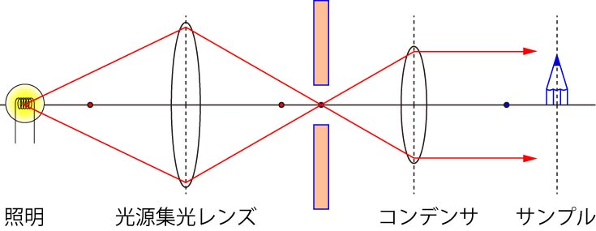
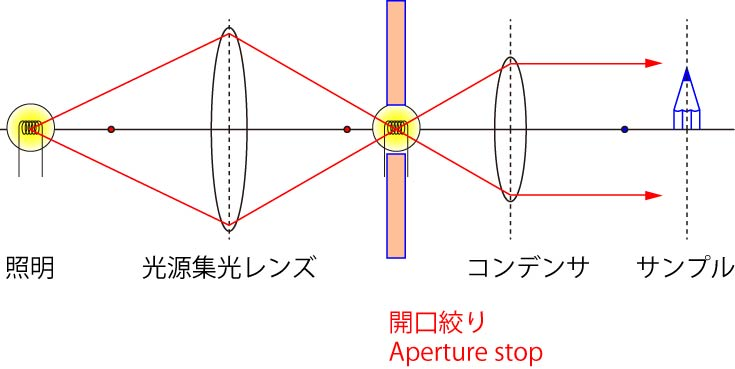
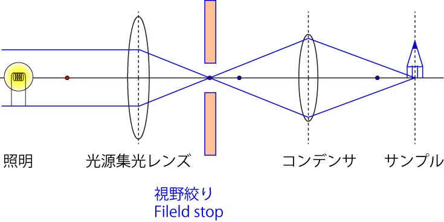

さて，先に述べた，照明と共役な点に，絞り，をおいてみましょう．

そうなるとどうなるか．．．．
照明から発せられた光を制限するわけですから，
光の量が減る
ことになります．
つまり，
サンプルへの照明を絞りによって調節することができる
ということになるのです．
図では一点から発せられた光を示していますが，照明が点光源ではないので，中心以外からの光が絞りによって制限されるのです．
この位置を，
開口絞り（Aperture stop）
と呼びます．
この絞りの位置は，サンプル上では集光しませんので，サンプル上ではこの絞りを見ることができません．

次に，サンプルと共役な点に絞りをおいてみましょう．
先ほどと，ほとんど変わっていませんが，一番の大きな違いは，
絞りの位置とサンプルの位置が共役である
従って，絞りの像も観察できる
となります．
これが何を意味するかというと，
サンプルに照射する範囲を制限することができる
なのです．
この位置を，
視野絞り（Field stop）
と呼びます．

視野絞りを調整することにより，不必要な場所に照明を当てることがなくなります．
これは，視野外からの散乱光，を防ぐことにより，より高いコントラストの像を得ることができます．
また，蛍光観察においても，余分な範囲に励起光を与えなくすることができるので，高コントラストとともに，無駄な退色を防ぐこともできます．